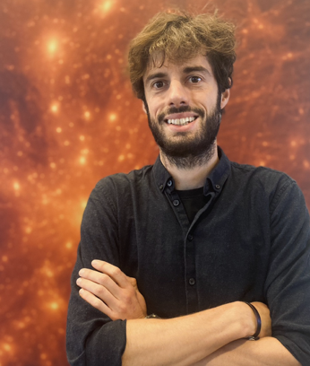

Daniele Rogantini is a Margaret Burbidge Prize Postdoctoral Fellow at the University of Chicago and an X-ray astrophysicist interested in how matter behaves in some of the most violent environments in the Universe. He uses high-resolution X-ray spectroscopy together with advanced photoionisation modeling to study hot, ionized, and often fast-moving gas, with the broader goal of understanding how black holes accrete matter, launch powerful outflows, and interact with their surroundings. His work makes use of a wide range of X-ray observatories, including XRISM, Chandra, XMM-Newton, NICER, NuSTAR, Swift, and IXPE, and he is also involved in the scientific development of future missions such as NewAthena and Lynx.
His research has gradually expanded across very different cosmic scales. During his PhD, he focused on interstellar dust and on using X-rays to uncover its composition and chemistry. He then moved toward the study of ionized winds and outflows from stellar-mass black holes in X-ray binaries and from supermassive black holes in active galactic nuclei, developing particular expertise in photoionisation and time-dependent modeling of these plasmas. More recently, his interests have expanded further to the hot gas filling galaxy groups and clusters, some of the largest structures in the Universe. In a sense, his scientific path has been steadily climbing from some of the smallest compact objects in the cosmos to some of its largest objects, with X-ray spectroscopy as the common thread along the way.
Outside astronomy, Daniele also likes climbing (on ice, rock, and plastic) together with biking, hiking, and maintaining the optimistic belief that Lake Michigan is always warm enough for a swim.
Department page
Publications: ADS
ORCID: 0000-0002-5359-9497
Email: danieler(at)uchicago.edu
Office: ERC, room 525